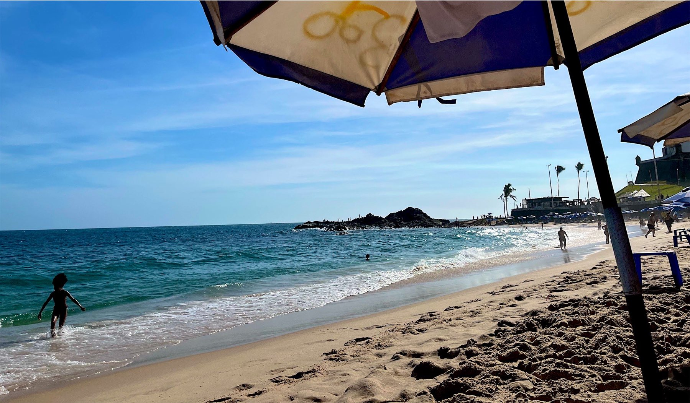
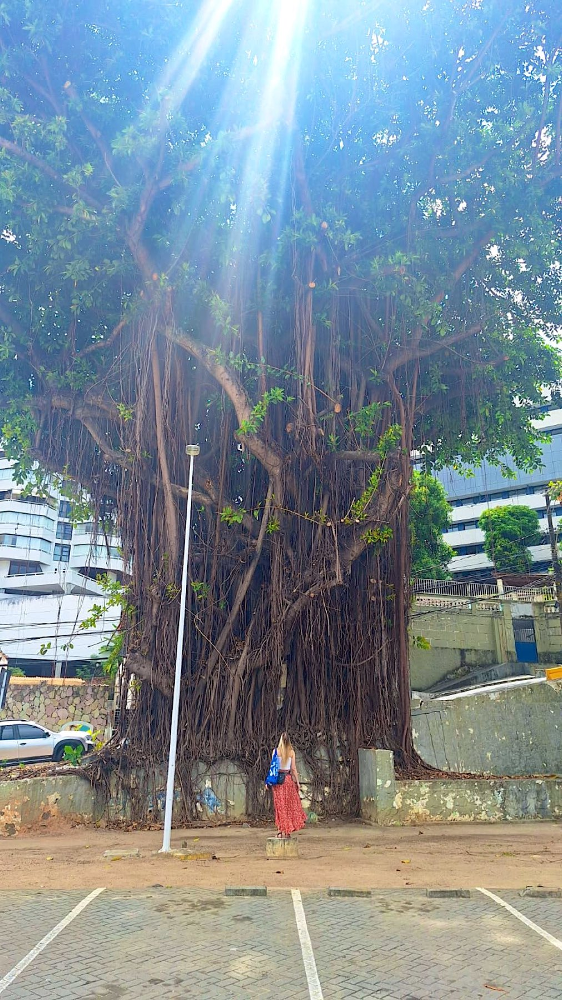
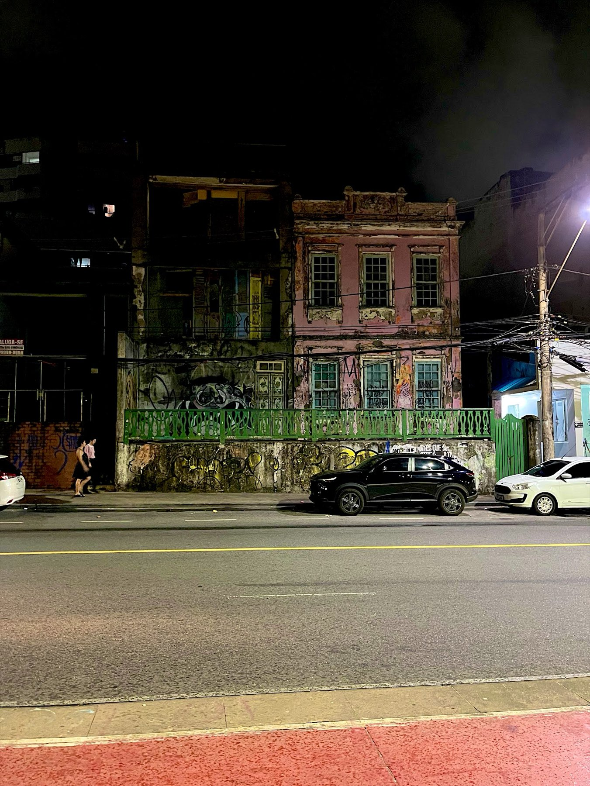
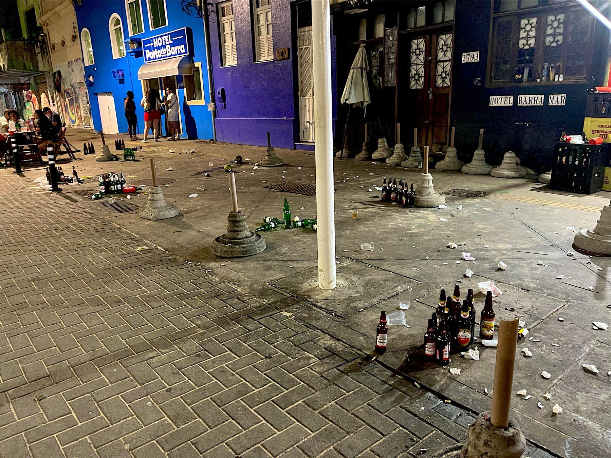
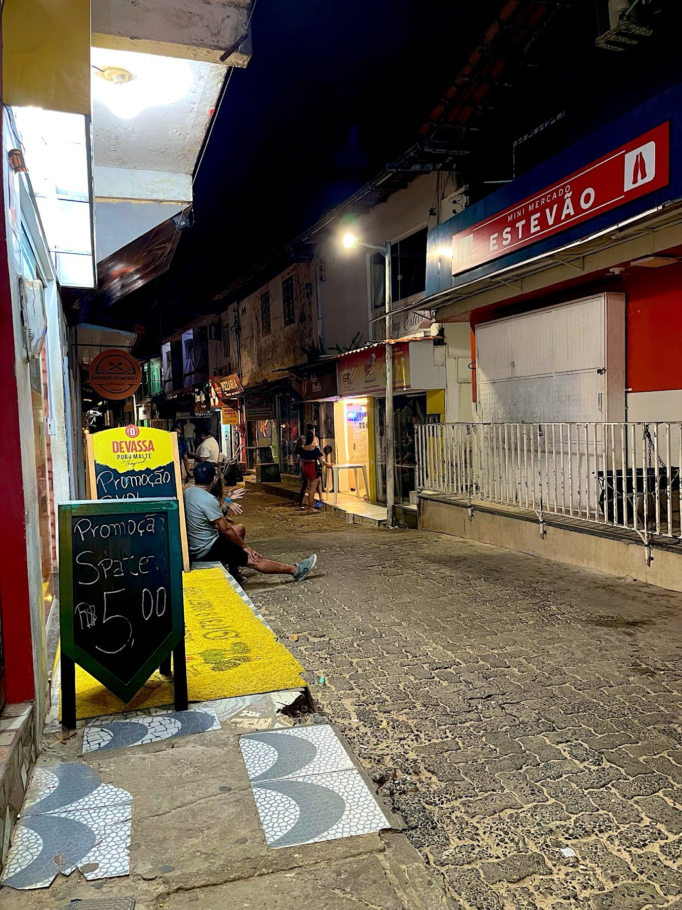

The short answer
Brazil has high crime statistics, but most serious crime is concentrated in areas tourists never visit. For visitors to Bahia, the realistic risks are pickpocketing, phone snatching and occasional muggings — usually at night, on empty streets, or on beaches where belongings are left unattended. A handful of habits dramatically lowers your risk.
Salvador: neighborhood by neighborhood
- Barra & Ondina: the most popular base. Busy seafront promenade, good at day and early evening.
- Pelourinho: heavily touristed and policed during the day. At night, stick to the main lit squares (Terreiro de Jesus, Largo do Pelourinho) and take a car back.
- Santo Antônio Além do Carmo: charming and quieter, with boutique pousadas; use rides at night.
- Rio Vermelho: lively nightlife; the main streets are busy until late.
- Avoid: walking through the Lower City (Comércio) after business hours, deserted stretches of beach at night, and any neighborhood a local tells you to skip.

Phones, cash and cards
Phone snatching is the number-one issue in Brazilian cities. Step into a shop to check maps, avoid holding your phone near the curb, and consider a cheap backup phone. Carry one card and a little cash in your pocket, and leave the rest in the hotel safe. Use ATMs inside banks, malls or supermarkets during the day. Brazilians pay almost everything by card or Pix; tap-to-pay with a no-foreign-fee U.S. card works widely.
In restaurants and cafés
Watch your bag when you eat out. Always keep it in front of you, on your lap or between your feet, where you can see and feel it. Never hang it on the back of your chair or leave it on an empty seat beside you. The same goes for phones: don’t leave them on the table edge, especially at sidewalk tables where people pass close by.
Getting around
Uber and the Brazilian app 99 work well in Salvador and are the safest way to move at night. Confirm the plate before getting in. Licensed taxis from official stands are also fine. On islands like Morro de São Paulo there are no cars — you’ll walk, and porters with wheelbarrows carry luggage from the pier.

Beach and ocean safety
It’s not safe to leave your things unattended on public beaches in Brazil. Bring only what you need, and when you swim take a floating waterproof bag into the water with your phone, keys and cash — that’s what we did every day. See our local beach-day guide. Strong currents occur at many open-ocean beaches; swim where locals swim and lifeguards are present. The equatorial sun is intense year-round: SPF 50, hats, and lots of água de coco.

Health
Drink bottled or filtered water. Dengue is present in Bahia, so use repellent, especially at dawn and dusk. The CDC recommends yellow-fever vaccination for travel to much of Brazil — check the CDC Brazil page and see a travel clinic 4–6 weeks before your trip. Buy travel insurance with medical evacuation coverage.
Worn streets are not the same as unsafe
If you’re used to very polished neighborhoods, the look of Brazilian streets can be a shock at first: façades are weathered, sidewalks uneven, paint faded. But they are also warm, colorful and full of soul, with plenty of local places for every taste. Judge an area by how busy and lit it is, not by how new the buildings look.

Common scams
- “Free” Bonfim ribbons tied on your wrist followed by a request for money — politely decline.
- Unofficial guides in the Pelourinho who attach themselves to you. Book guides through your hotel.
- Card machines with an inflated amount — always check the screen before tapping.
Emergency numbers in Brazil
- 190 – Military Police
- 192 – Ambulance (SAMU)
- 193 – Fire department
Enroll in the U.S. State Department’s STEP program before you go and read the current travel advisory for Brazil.
In pictures






Frequently asked questions
Is Salvador, Brazil safe for tourists?
Salvador is safe enough for millions of visitors each year if you use big-city precautions: keep phones and jewelry out of sight, use Uber or 99 at night, and stay in busy areas like Barra, Rio Vermelho and the main squares of the Pelourinho.
Is it safe to walk in the Pelourinho at night?
The main squares are busy and policed in the evening, especially on Tuesday music nights, but side streets empty out. Stay on lit, crowded streets and take a ride back to your hotel.
Is Morro de São Paulo safe?
Morro de São Paulo is generally relaxed and car-free. Petty theft on the beach is the main concern, so don’t leave belongings unattended.
Can I drink tap water in Bahia?
No. Drink bottled or filtered water, which is cheap and available everywhere.